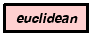

Class euclidean

A* heuristic for Euclidean graphs.
This heuristic has three requirements:
-
All nodes should have the attribute 'position';
-
The weight of all edges should be the euclidean distance between the
nodes it links;
-
The
optimize() method should be called before the
heuristic search.
A small example for clarification:
>>> g = graph.graph()
>>> g.add_nodes(['A','B','C'])
>>> g.add_node_attribute('A', ('position',(0,0)))
>>> g.add_node_attribute('B', ('position',(1,1)))
>>> g.add_node_attribute('C', ('position',(0,2)))
>>> g.add_edge('A','B', wt=2)
>>> g.add_edge('B','C', wt=2)
>>> g.add_edge('A','C', wt=4)
>>> h = graph.heuristics.euclidean()
>>> h.optimize(g)
>>> g.heuristic_search('A', 'C', h)
|
|
__init__(self)
Initialize the heuristic object. |
|
|
|
|
optimize(self,
graph)
Build a dictionary mapping each pair of nodes to a number (the
distance between them). |
|
|
|
|
__call__(self,
start,
end)
Estimate how far start is from end. |
|
|
|
Inherited from object:
__delattr__,
__format__,
__getattribute__,
__hash__,
__new__,
__reduce__,
__reduce_ex__,
__repr__,
__setattr__,
__sizeof__,
__str__,
__subclasshook__
|
|
Inherited from object:
__class__
|
__init__(self)
(Constructor)
|
|
Initialize the heuristic object.
- Overrides:
object.__init__
|
|
Build a dictionary mapping each pair of nodes to a number (the
distance between them).
- Parameters:
|
__call__(self,
start,
end)
(Call operator)
|
|
Estimate how far start is from end.
- Parameters:
start (node) - Start node.end (node) - End node.
|